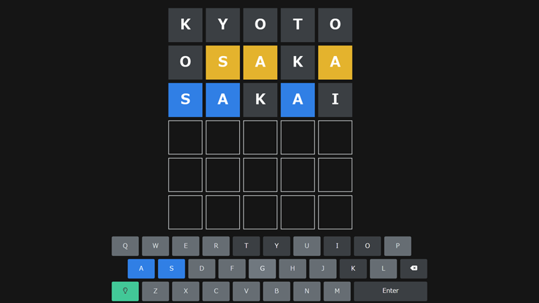

mrhorin
フリーランス歴9年のフルスタックエンジニアです。
Rails + ReactによるWebアプリ開発、electronによるデスクトップアプリの開発や
WordPressを使ったブログ作成からSEO対策まで何でもやります。
My Skills
Html & CSS
JavaScript
Ruby
Python
Ruby on Rails
React
WordPress
Linux
docker
git
Contact Me

Makele
単語当てゲーム「Wordle」を自分の好きなワードで作れるWebアプリ。
使用フレームワークはNext.js + Rails APIモードでSPA開発しており、SSR、SSGを行うことでSEO対策およびFPC（First Contentful Paint ）の向上を実現しました。
デザインにはCSSフレームワークなどは使用せず、レスポンシブデザインやダーク/ライトテーマの切り替え機能などすべて自作で実装しています。
ユーザー認証にはX(Twitter)のOAuth認証を利用しています。
またPWAによるアプリ化にも対応しており、スマートフォンなどのホーム画面にWebアプリとしてインストールすることもできます。
サービス名の由来は"Wordle"を"Make"できることから。
- Ruby on Rails
- Next.js
- Ruby
- TypeScript
- MySQL
- HTML & CSS